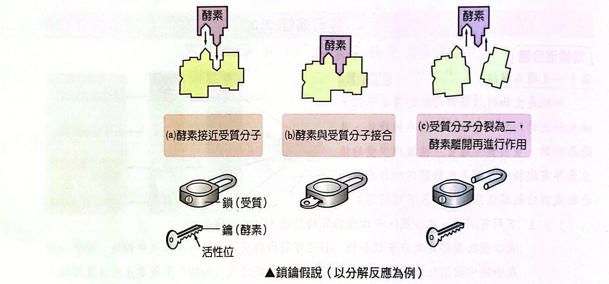
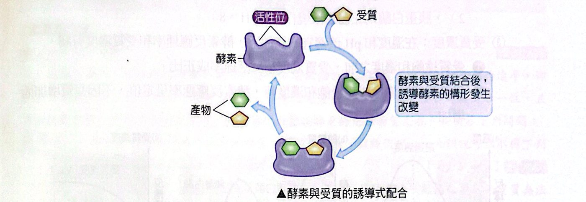
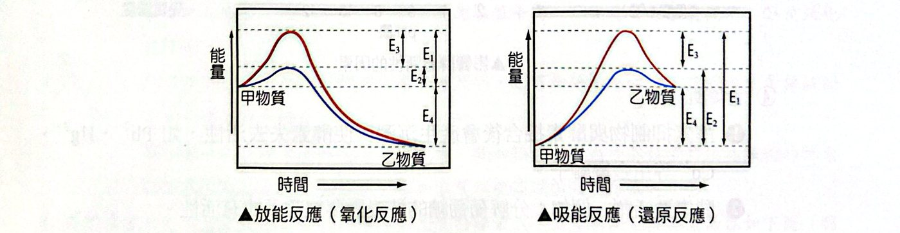
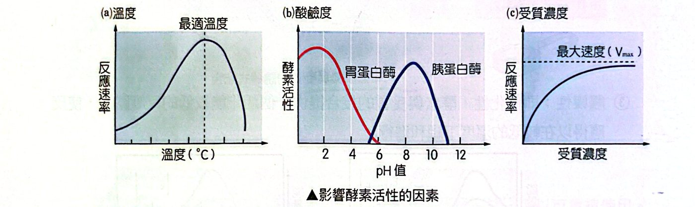

酵素是什麼？
細胞內的化學反應（新陳代謝）通常需要特殊的蛋白質來「催化」，讓反應加速進行。這種蛋白質叫做酵素（enzyme），也叫酶。你可以把酵素想成廚房裡的專用工具：切菜刀不能拿來開罐頭，每種工具只負責特定的工作。
酵素有三個基本性質，段考最愛考：
| 性質 |
意思 |
重點 |
| 專一性 |
一種酵素只能催化特定的一種或少數反應 |
酵素只和特定的受質反應；結合與兩者的立體結構有關（鎖鑰假說）；名稱常以受質命名（如澱粉酶） |
| 周轉性 |
酵素和受質只是暫時結合，本身不減少、不改變 |
所以可以重複使用，只要微量就能催化大量受質 |
| 觸媒性（催化性） |
酵素與受質結合提供一條活化能較低的反應路徑 |
使反應能在較低溫度下順利進行 |

鎖鑰假說：酵素（鑰匙）與受質（鎖）
酵素作用的過程：酵素＋受質 →「酵素–受質」複合體（不穩定，受質的某些鍵結改變，降低活化能）→ 酵素＋產物（酵素恢復原狀、重複使用）。
兩種模式：
- 鎖鑰假說：酵素活性位的形狀和受質恰好吻合，像鑰匙配鎖。
- 誘導式配合：酵素與受質結合時，複合體的形成可能稍微改變兩者的立體結構（像手套會隨著手的形狀調整）。

誘導式配合
酵素如何降低活化能
不管是放能反應還是吸能反應，酵素的作用只有一件事：降低活化能，讓反應更容易起跑。
- 無酵素時，活化能為 E₁；有酵素時活化能降為 E₂；酵素降低的活化能是 E₃（＝E₁−E₂）；反應前後的能量變化是 E₄。
- 酵素不改變 E₄（不改變反應的能量差，也不能改變反應方向與平衡常數）。

活化能示意：放能反應（左）與吸能反應（右）
影響酵素活性的因素
| 因素 |
規律 |
重點 |
| 溫度 |
適宜範圍內，反應速率隨溫度升高而變快；一般酵素活動範圍約 0～45°C |
溫度過高（約 >55°C）會改變酵素結構，反應速率為零，且無法恢復活性；低溫只是活性降低、不會被破壞，所以酵素可低溫保存 |
| 酸鹼度（pH） |
酸鹼度會影響酵素與受質的接合，所以有最適 pH |
大多數酵素在接近中性最佳；胃蛋白酶適合強酸（pH≈2）、胰蛋白酶適合弱鹼（pH≈8） |
| 受質濃度 |
在溫度、pH 適宜時，受質濃度愈高，速率愈快 |
受質未飽和時成正比；達飽和後速率不再增加（最大速率 Vmax），因為酵素已全被占滿 |
| 金屬離子 |
重金屬離子（Pb²⁺、Hg²⁺、Cd²⁺）與酵素結合產生沉澱，使酵素失去活性；酵素致活劑（如鎂離子）則幫助酵素活動 |
|

影響酵素活性的因素：溫度、酸鹼度、受質濃度
輔酶
輔酶是協助酵素催化的小分子，特性要對比酵素來記：
|
酵素 |
輔酶 |
| 本質 |
蛋白質 |
非蛋白質的有機物（比蛋白質小） |
| 耐熱性 |
高溫會變性 |
對熱穩定，不易受高溫破壞 |
| 專一性 |
有專一性 |
不具專一性：一種輔酶可輔助多種酵素；但一種酵素必須搭配特定輔酶 |
| 反應中 |
不改變、可重複使用 |
不改變、不被用掉、可重複使用（周轉性） |
輔酶的作用像「搬運工」：擔任氫或電子的接受者／供給者。例如 NAD⁺ 和 NADP⁺ 都由核苷酸和菸鹼酸（維生素 B₃）構成。維生素（尤其 B 群）常是輔酶的原料。
經典演練
經典演練 1鎖鑰假說能解釋什麼・題組 1（多選）
化學反應中，催化劑是可藉由提供一個活化能較低的反應路徑，因而加快反應的速率，卻不會於反應中消耗的化學劑。而酵素則是一種催化性蛋白，酵素與受質接合時具有專一性，且其活性會受到一般環境因素的影響，也受專門影響該酵素的化學物質左右。
酵素反應可以用鎖和鑰匙的關係來解釋，稱為「鎖鑰假說」，此假說可以解釋下列哪些有關酵素的特性？（多選）
(A) 受質專一性 (B) 反應後酵素分子結構不變 (C) 若酵素分子結構改變，則受質無法結合 (D) 酵素的作用濃度有一定的範圍 (E) 酵素由蛋白質組成並由基因製造
看答案與詳解收起
答(A)(B)(C)
解鎖鑰假說談的是形狀吻合：鑰匙只開特定的鎖（A 專一性）；開完鎖鑰匙不變（B 酵素不變）；鑰匙形狀變了就打不開（C）。(D) 是受質濃度飽和的問題、(E) 是酵素的化學本質，都不是鎖鑰假說要解釋的。
酵素加速代謝反應的主要方式為何？
(A) 改變反應的總體能量變化 (B) 將反應推離平衡 (C) 使受質分子更穩定 (D) 使活化能降低
看答案與詳解收起
答(D)
解酵素的觸媒性＝降低活化能。(A) 反應前後總能量差不變；(B) 酵素不能改變平衡；(C) 受質反而要變得「容易反應」。
將剛採摘下來的玉米立即放入沸水中片刻，則可保持它的甜味。下列何者是保持甜味的主要應用原理？
(A) 加熱可以改變可溶性糖分子的結構 (B) 加熱會破壞將可溶性糖轉化為澱粉的酵素 (C) 加熱可以防止玉米粒發芽 (D) 加熱可以提高澱粉酶的活性
看答案與詳解收起
答(B)
解玉米粒內有酵素會把可溶性的糖（甜）轉成澱粉（不甜）。放入沸水中，高溫使酵素變性失活，糖就不再被轉換，甜味得以保留。
某科學家以分子生物技術，做出五種不同長度的酵素 X，並分別測定其酵素活性如下圖（酵素 X 總長為 419 個胺基酸，圖中數目代表胺基酸的編號，例如：86～419 代表此蛋白質含酵素 X 的第 86 號胺基酸到第 419 號胺基酸）。依據實驗結果，酵素 X 分子中具有活性的部分最可能是哪一段？
看答案與詳解收起
答約第 44～86 號胺基酸（至少需要 44～85 號這一段）
解活性結果：完整（＋）、1～196（＋）、1～302（＋）、44～419（＋）；197～419（－）、86～419（－）。
- 197～419 沒有活性，1～196 有活性 ⇒ 活性部位在 1～196 之內。
- 44～419 有活性，但 86～419 沒活性 ⇒ 缺少 44～85 就失去活性，所以活性部位需要這一段。
兩個條件交集：活性部位在 44～86 附近。
酵素的活性會受到實驗條件如溫度、酸鹼值及受質濃度改變的影響，當它與受質結合時，會催化受質進行化學反應。圖中的實線甲代表某種酵素在某溫度與某酸鹼值下，進行催化作用所得之反應速率與受質濃度的關係。當達最大反應速率一半時，所需的受質濃度為 1 mM，而達最大反應速率所需的受質濃度是 2 mM。
在此酵素與受質的反應系統中加入某化學物質，使反應曲線向右移動如虛線乙所示。試問所加化學物質對此反應速率的作用為何？
看答案與詳解收起
答降低反應速率（需要更高的受質濃度才達到同樣的速率，類似競爭性抑制）
解曲線右移＝要用更高的受質濃度，才能達到原本的速率，表示在同樣受質濃度下反應變慢；所加的是抑制酵素活性（與受質競爭活性位）的物質。
如果該酵素是唾液澱粉酶，改變哪些因素，可能可以使圖中實線甲向左移至細線丙？（多選）
(A) 減少受質濃度 (B) 改變 pH 值 (C) 改變溫度 (D) 加入競爭性受質類似物 (E) 加入促進劑
看答案與詳解收起
答(B)(C)(E)
解曲線向左＝用較低的受質濃度就能達到相同速率＝酵素效率變高。把 pH 或溫度調到更接近最適值（B、C），或加入促進劑（致活劑）（E）都可以。(A) 減少受質濃度只是沿曲線往左下走，曲線本身不動；(D) 競爭性抑制物會讓曲線右移。
下圖縱軸為酵素反應速率（v），橫軸為受質濃度（c），何者能正確表示酵素量增加一倍時，受質濃度和反應速率的關係？（每張圖兩條曲線，其中一條代表原來的酵素量）
看答案與詳解收起
答(B)
解酵素量加倍，等於有兩倍的「工人」：未飽和時，每個受質濃度下速率都較高（曲線較陡）；飽和時的最大速率也加倍。所以應該是「原來的曲線」之上多一條斜率較大、平台較高的曲線。